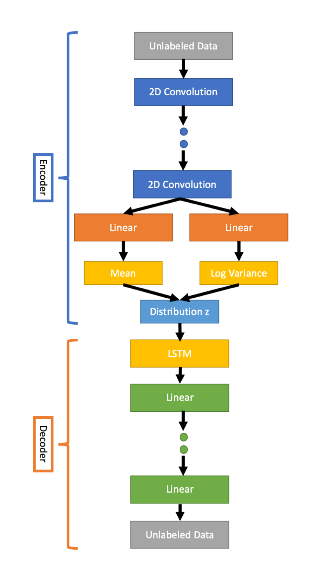
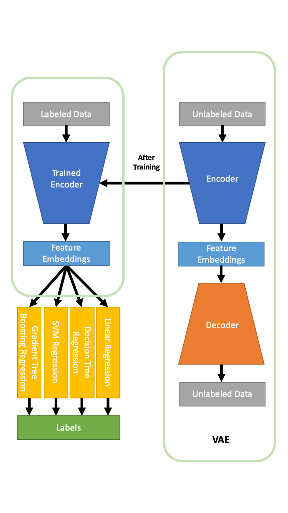
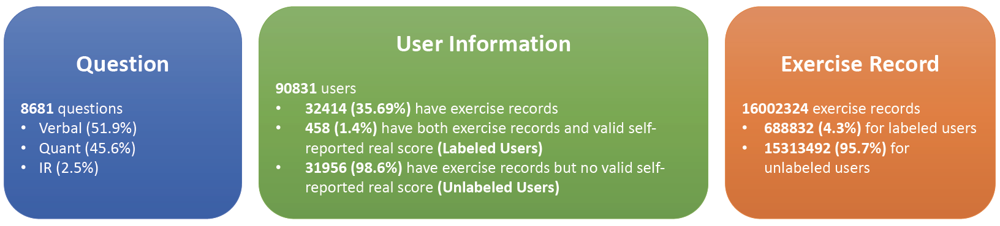
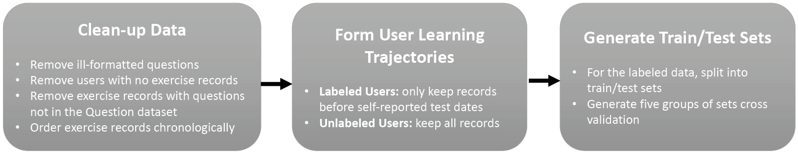

GMAT Score Prediction: Forecasting GMAT Scores via Sequential Learning Trajectories from Online Test Prep Platforms
Smart Primer Research Group, Computer Science Department, Stanford University February 2019 - Present
CNN-VAE Applied to GMAT Dataset

Pipeline Overview

What is GMAT?
GMAT is a computer adaptive test (CAT) used in admission to graduate management programs.
What is the problem?
On average, students can have 0.25 - 0.3% correct rate increase per practicing 100 questions.
To achieve success in a GMAT class, students need plenty of practices before the real test.
However, questions received on GMAT get harder or easier based on how well testers perform, and GMAT releases little information about the scoring rubric.
Thus, it is almost impossible to predict GMAT score based on the scaled section scores of mock exams with 100% accuracy.
There are many online test prep platforms that offer mock standardized exams including GMAT.
It is very useful to make use of online practicing records to predict the actual exam scores to help students manage their study progress.
Solution
Collecting labeled data in educational data mining (EDM) is a time- and cost-consuming task.
However, unlabeled data is in high volumes from MOOCs and intelligent tutoring systems.
It is possible to use semi-supervised learning to extract useful features from the unlabeled data to boost model performance on the labeled data.
To solve our research question, we leveraged a Variational Auto-encoder (VAE) to predict students’ real GMAT scores based on their practice records from online test prep services to help them better prepare for the exam.
Data
We obtained the dataset from TAL Education Group, the largest online education corporation in China, that provides online test prep for various standardized exams including GMAT.
The data consists of 3 datasets: Question, User Information, and Exercise Record.
Each student has a sequence of exercise records, forming a learning trajectory that can be used to predict real GMAT scores.

Data Processing

Method
Variational auto-encoder (VAE) consists an encoder that transforms inputs into low-dimensional representations, and a decoder that reconstructs inputs based on such representations.
VAE can learn an efficient feature embedding using unlabeled data to improve the performance of standard supervised learning algorithms.
We encoded learning trajectories into Question Embedding Matrices. We took trajectories of length 250 for each user. Each question id and correctness id is represented by an array of length 256 and 4 respectively.
We first trained the CNN-VAE Network using our unlabeled user data.
Distribution z is a low dimensional representation of the Question Embedding Matrix.
After the CNN-VAE is trained, we fed the labeled user data into the encoder of CNN-VAE to generate distribution z for labeled users.
Finally, we concatenate VAE with hand-engineered features to train four standard supervised learning models.
Roles
• Pre-processed the raw data of over 8,000,000 GMAT question practicing records from 32,414 users of TAL Education Group’s online test preparation platform
• Compiled a thorough statistical analysis report of students' in-system question practicing performance
• Predicted GMAT test scores by training and testing baseline machine learning models (Linear Regression, Decision Tree, Gradient Tree, SVM etc.) on users with in-system question practicing records and reported real GMAT test scores
• Constructed and trained the CNN-VAE model, and evaluated its ability of leveraging unlabelled user data to boost the accuracy of GMAT scores prediction
• In preparation of a paper that presents our results